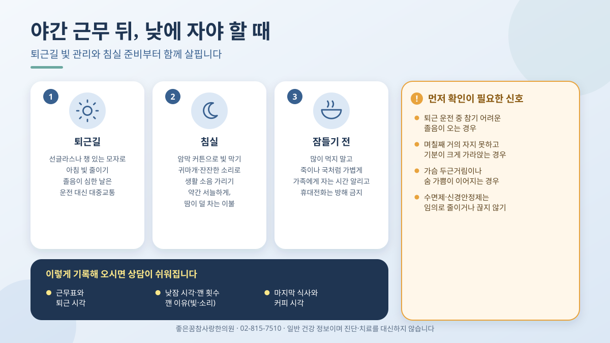

이종호 한의사 감수좋은꿈참사랑한의원 대표원장 (한의사 면허번호 19769)발행 2026-11-23 · 수정 2026-11-25
이 글의 차례
야간 근무를 마치고 아침에 퇴근하면 몸은 자야 하는데 세상은 깨어 움직이기 시작합니다. 밝은 햇빛과 생활 소음 때문에 낮잠이 자주 끊긴다면, 침실을 낮에도 밤처럼 만드는 준비와 퇴근길 빛 관리부터 함께 살펴봅니다.
낮에 자는 잠은 밤잠보다 짧고 자주 끊기기 쉽습니다. 몸의 시계가 낮에는 깨어 있으라는 쪽으로 기울어 있기 때문입니다. 그래서 '어떻게 하면 낮에도 밤처럼 잘 수 있을까'를 침실 환경, 퇴근부터 잠들기까지의 순서, 근무와 쉬는 날 사이의 리듬 세 가지로 나눠 보면 무엇부터 손볼지 정리하기 쉽습니다.
왜 이런 불편이 생길 수 있나요
- 아침 햇빛은 몸에 깨어 있을 시간이라는 신호를 주어 퇴근 뒤 잠들기 어렵게 만들 수 있습니다.
- 낮에는 택배, 공사, 가족의 생활 소리처럼 소음이 많아 얕은 잠에서 쉽게 깹니다.
- 근무 중 늦게 먹은 식사나 커피가 잠자리까지 남아 있는 경우가 있습니다.
- 몸은 낮 동안 체온과 각성을 올리는 쪽으로 움직여, 낮잠은 오후 무렵 저절로 깨면서 짧아지는 경우가 많습니다.
- 연속 야간 근무를 마치고 쉬는 날 밤잠으로 바로 돌아가려 하면 며칠 동안 잠이 흐트러질 수 있습니다.
- 한의학에서는 밤낮이 바뀐 생활에서 몸의 온기와 긴장이 어떻게 달라지는지도 함께 살핍니다.
먼저 이렇게 여쭙니다
- 퇴근 뒤 잠들기까지 보통 얼마나 걸리나요?
- 낮잠은 몇 번 깨고 총 몇 시간 정도 자나요?
- 침실에 들어오는 빛과 소리는 어느 정도인가요?
- 잠들기 전에 식사를 하시나요, 마지막 커피는 몇 시쯤인가요?
- 쉬는 날에는 언제 주무시나요?
일상에서 먼저 해 볼 수 있는 것
- 퇴근길에는 선글라스나 챙 있는 모자로 아침 빛을 줄이기
- 암막 커튼으로 빛을 막고, 커튼 가장자리와 문틈으로 새는 빛, 충전기나 전자기기의 작은 불빛까지 가리기
- 귀마개나 잔잔한 소리로 생활 소음 가리기
- 침실은 약간 서늘하게, 이불은 땀이 덜 차는 것으로 고르기
- 근무 후반부에는 커피와 에너지음료를 줄이고 물이나 따뜻한 차로 바꾸기
- 잠들기 직전에는 많이 먹지 말고 죽이나 국처럼 가볍게 먹기
- 가족에게 잠자는 시간을 알리고 휴대전화는 방해 금지로 바꿔 두기
상황별 예시
- 예를 들어 아침 7시 무렵 퇴근하는 경우, 퇴근길에 선글라스를 쓰고 8시 전에 가벼운 식사와 미지근한 샤워를 마친 뒤 8시 반쯤 잠자리에 들어, 오후 2~3시쯤 일어나는 식으로 낮잠 시간을 근무 기간 동안 같게 두어 봅니다.
- 예를 들어 낮 시간 공사 소리나 택배 초인종에 자주 깨는 경우, 귀마개나 잔잔한 소리를 쓰고, 택배는 문 앞에 두도록 요청해 두거나 초인종 소리를 줄이는 것부터 시작합니다.
- 예를 들어 연속 야간 근무를 마치고 다음 날부터 쉬는 경우, 퇴근한 날 오전에 3~4시간만 짧게 자고 오후에는 바깥 빛을 보며 깨어 있다가 그날 밤 평소보다 조금 이른 시각에 잠자리에 드는 방법을 써 보는 분이 많습니다.
스스로 점검해 보세요
- 퇴근 뒤 잠들기까지 한 시간 넘게 걸리는 날이 많다.
- 낮잠 중 두 번 이상 깨는 날이 일주일에 사흘 이상이다.
- 커튼 틈이나 전자기기 불빛 때문에 침실이 완전히 어둡지 않다.
- 근무 후반에도 커피나 에너지음료를 마신다.
- 퇴근 직후 배부르게 먹고 바로 눕는 날이 많다.
- 퇴근 운전 중 졸음을 느낀 적이 있다.
- 쉬는 날의 잠 시각이 근무일과 크게 달라, 근무로 돌아간 뒤 며칠이 특히 힘들다.
한의원에서 함께 살필 수 있는 경우
- 낮잠이 자꾸 끊기고 피로가 쌓이는 경우 근무 패턴과 잠의 모양을 함께 살핍니다.
- 근무 뒤 속이 더부룩하거나 입맛이 흐트러지는 경우 식사 시각과 소화를 함께 살핍니다.
- 몸은 지쳤는데 긴장이 풀리지 않는 경우 몸의 온기와 긴장 정도를 함께 살핍니다.
첫 방문은 이렇게 진행됩니다
- 이야기 듣기: 근무표(주간·저녁·야간의 순서), 퇴근 시각, 낮잠의 모양, 쉬는 날의 잠을 먼저 충분히 듣습니다.
- 맥 짚기와 혀·배 살피기: 맥부터 짚어 지친 정도와 긴장을 살피고, 필요하다고 판단될 때 설진·복진을 더해 소화와 몸의 온기를 함께 봅니다.
- 생활 기록 함께 보기: 근무표와 잠 기록을 한 장에 나란히 놓고, 어느 근무 순서에서 잠이 가장 흐트러지는지 함께 찾습니다.
- 방향 정하기: 상태에 맞춰 침이나 한약 상담 등을 정합니다.
- 귀가 전 정리: 다음 근무 전까지 지켜볼 점을 함께 정리합니다. 다시 오시면 그사이 근무 순서와 잠이 어땠는지 이어서 여쭙고, 담당 원장이 바뀌는 날에도 이전 기록을 보고 이어서 진료합니다.
얼마나 지켜보고 언제 상담할까요
- 침실 준비와 퇴근 순서를 바꾼 뒤 근무 주기 한두 번(대략 2~3주) 동안 낮잠 시각과 깬 횟수, 깬 이유를 적어 봅니다.
- 그래도 낮잠이 자꾸 끊겨 총 잠 시간이 크게 모자란 날이 이어지거나, 쉬는 날에도 잠이 돌아오지 않아 피로가 쌓인다면 상담을 받아 보세요.
- 퇴근 운전 중 졸음이 위험하게 느껴진 적이 한 번이라도 있다면, 지켜보지 말고 그날부터 운전을 피하세요.
이렇게 기록해 오시면 상담이 쉬워집니다
- 근무표와 퇴근 시각
- 낮잠을 잔 시각, 깬 횟수, 깬 이유(빛, 소리, 화장실)
- 근무 중 마지막 식사와 커피 시각
- 쉬는 날 잠든 시각과 일어난 시각
이런 증상은 먼저 확인이 필요합니다
- 퇴근 운전 중 참기 어려운 졸음이 오거나 깜빡 졸았던 적이 있는 경우
- 며칠째 거의 자지 못하고 기분이 크게 가라앉는 경우
- 가슴 두근거림이나 숨 가쁨이 이어지는 경우
- 큰 코골이와 자다가 숨이 멎는 것 같다는 말을 들은 경우(수면 검사 상담)
졸음이 심한 날은 운전 대신 대중교통을 이용하세요. 복용 중인 수면제나 신경안정제는 처방한 의사와 상의 없이 줄이거나 끊지 않습니다. 기분이 크게 가라앉고 극단적인 생각이 든다면 ☎ 109에 바로 도움을 요청하세요.
관련 글
- 야근이나 교대근무로 방문 일정이 불규칙할 때는 어떻게 계획하나요?
- 작은 소리에도 자주 깨는 분은 어떤 점을 살펴보나요?
- 스마트폰 알림 소리나 진동에 밤마다 깰 때는 어떻게 하나요?

여쭙는 것
- 퇴근 뒤 잠들기까지 보통 얼마나 걸리나요?
- 낮잠은 몇 번 깨고 총 몇 시간 정도 자나요?
- 침실에 들어오는 빛과 소리는 어느 정도인가요?
생활에서 해 볼 것
- 퇴근길에는 선글라스나 챙 있는 모자로 아침 빛을 줄이기
- 암막 커튼으로 빛을 막고, 커튼 가장자리와 문틈으로 새는 빛, 충전기나 전자기기의…
- 귀마개나 잔잔한 소리로 생활 소음 가리기
한의원에서 함께 살필 것
- 낮잠이 자꾸 끊기고 피로가 쌓이는 경우 근무 패턴과 잠의 모양을 함께 살핍니다.
- 근무 뒤 속이 더부룩하거나 입맛이 흐트러지는 경우 식사 시각과 소화를 함께 살핍니다.
- 몸은 지쳤는데 긴장이 풀리지 않는 경우 몸의 온기와 긴장 정도를 함께 살핍니다.
먼저 확인이 필요한 신호
- 퇴근 운전 중 참기 어려운 졸음이 오거나 깜빡 졸았던 적이 있는 경우
- 며칠째 거의 자지 못하고 기분이 크게 가라앉는 경우
- 가슴 두근거림이나 숨 가쁨이 이어지는 경우
한눈에 보는 표
| 구분 | 핵심 |
|---|---|
| 여쭙는 것 | 퇴근 뒤 잠들기까지 보통 얼마나 걸리나요? 낮잠은 몇 번 깨고 총 몇 시간 정도 자나요? |
| 생활에서 해 볼 것 | 퇴근길에는 선글라스나 챙 있는 모자로 아침 빛을 줄이기 암막 커튼으로 빛을 막고, 커튼 가장자리와 문틈으로 새는 빛, 충전기나 전자기기의 작은 불빛까지 가리기 |
| 한의원에서 함께 살필 것 | 낮잠이 자꾸 끊기고 피로가 쌓이는 경우 근무 패턴과 잠의 모양을 함께 살핍니다. 근무 뒤 속이 더부룩하거나 입맛이 흐트러지는 경우 식사 시각과 소화를 함께 살핍니다. |
| 먼저 확인이 필요한 신호 | 퇴근 운전 중 참기 어려운 졸음이 오거나 깜빡 졸았던 적이 있는 경우 며칠째 거의 자지 못하고 기분이 크게 가라앉는 경우 |
자주 묻는 질문
퇴근 뒤 바로 자는 것과 조금 있다 자는 것 중 무엇이 낫나요?
사람마다 맞는 방식이 다릅니다. 며칠씩 나눠 기록해 보고 잠이 덜 끊기는 쪽을 함께 찾아봅니다.
쉬는 날에도 낮에 자야 하나요?
근무표에 따라 달라서, 다음 근무까지의 간격을 보고 함께 정리합니다.
수면 안대와 귀마개를 써도 괜찮나요?
빛과 소리를 줄이는 간단한 방법이라 많이 씁니다. 불편하지 않은 것으로 며칠 써 보고 잠이 덜 끊기는지 적어 오시면 됩니다.
퇴근 뒤 배가 고픈데 먹고 자도 되나요?
너무 배가 고프면 오히려 잠이 깨기도 해서, 죽이나 국, 바나나처럼 가볍게 조금 먹고 30분쯤 뒤에 눕는 편을 권합니다. 기름진 음식과 많은 양은 잠자리까지 속을 무겁게 할 수 있습니다.
야간 근무를 마친 아침에 진료를 받을 수 있나요?
좋은꿈참사랑한의원은 평일 09:30~20:00(점심 13:00~14:00), 토·일·공휴일 09:30~15:00(점심시간 없음)에 진료합니다. 너무 졸린 날은 먼저 쉬고 오시길 권합니다.
좋은꿈참사랑한의원은 재진 때 지난번 이야기부터 이어서 여쭙니다. 진료시간과 예약은 오시는 길에서 확인하세요.
어디서 상담받을 수 있나요?
좋은꿈참사랑한의원은 서울 동작구 만양로2길 2 신성빌딩 3층·5층(서울 동작구 상도동, 7호선 상도역 3번 출구 근처)에 있습니다. 한의사 3명(이종호 대표원장, 조영기 수석진료원장, 정원영 진료원장)이 진료합니다. 진료시간은 평일 09:30~20:00(점심 13:00~14:00), 토·일·공휴일 09:30~15:00이며, 방문 전 전화로 확인을 권합니다. 예약은 네이버 예약, 카카오톡 상담, 전화 02-815-7510로 받습니다.
이 글은 일반적인 건강 정보이며 개인의 진단이나 치료를 대신하지 않습니다. 증상이 있거나 복용 중인 약이 있다면 진료를 통해 확인하세요. 치료 효과는 개인마다 다를 수 있습니다.
작성 기준: 일반적으로 알려져 있는 건강 정보를 참고해 정리했습니다(대표원장 감수). 증상 기록은 1~2주 동안 하루 1회, 비슷한 시간에 적어 오시면 지난 상태와 비교하기 쉽습니다.